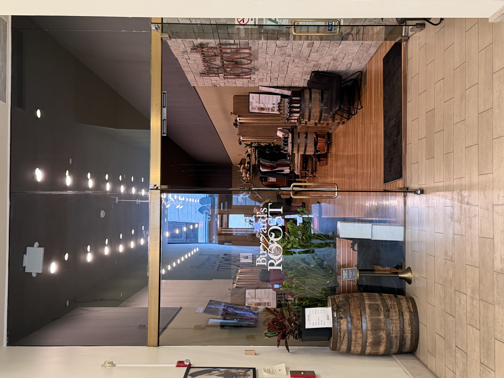
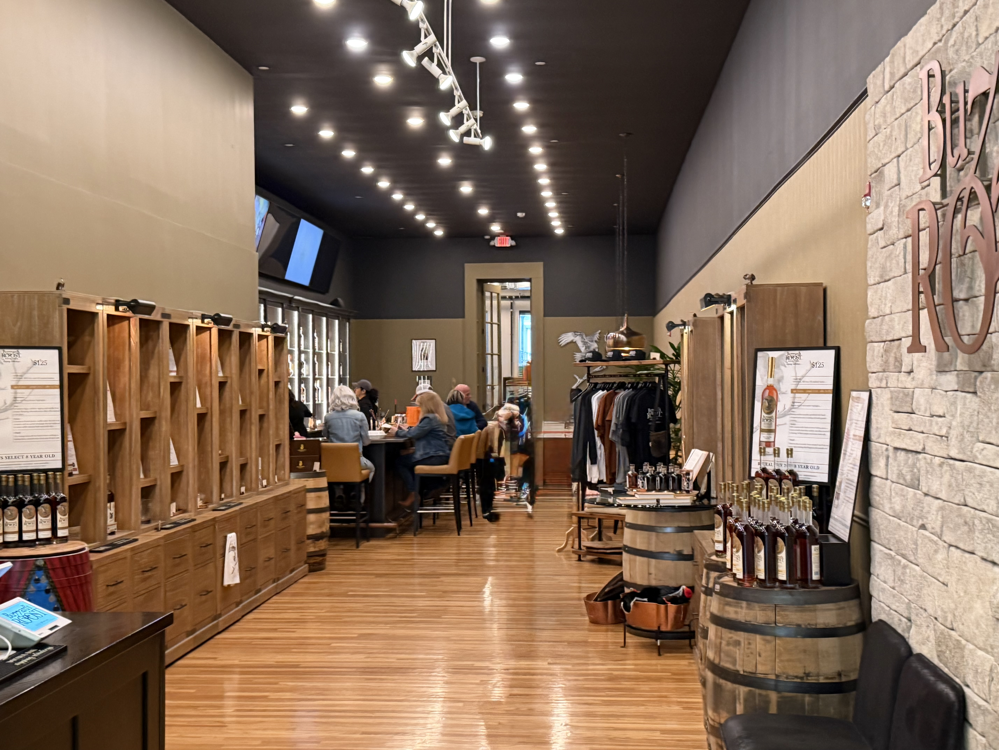
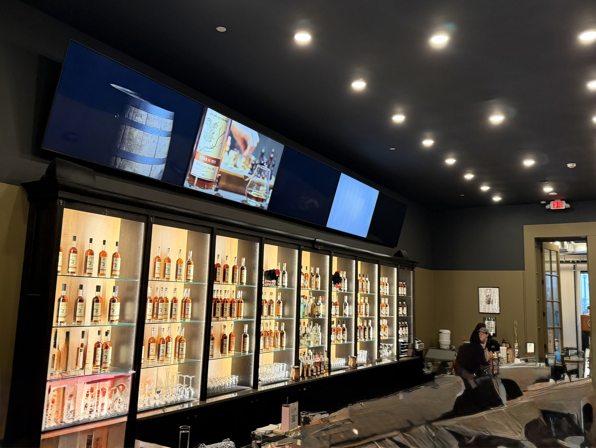

A woman-led independent craft distillery right in the heart of Louisville's Whiskey Row. Known for double-oaked secondary maturation, 17 proprietary barrel types, and a genuinely good bar vibe — open since 2023.
Buzzard's Roost opened in 2023 right in the thick of Whiskey Row, which already tells you something — there's no shortage of confidence here. The distillery is woman-led (CEO Judy Hollis Jones) and co-founded with Master Blender Jason Brauner, and their thing is double-oaked secondary maturation. They've built out 17 proprietary barrel types with specific char and toast levels, which is genuinely interesting from a production standpoint. On-site they have a 75-gallon Vendome pot still they call the "Buzz Cauldron."
In practice, what you get at street level is a pretty cool bar on Whiskey Row with a good vibe, a small retail shop, and a range of experiences from walk-in flights to a $100 bottle-your-own session. The location is hard to beat — you're right in the middle of the action, a short walk from Evan Williams, Old Forester, and Michter's. The staff were knowledgeable and easy to talk to.
One honest note: the whiskey itself was pretty average. Nothing that blew me away. But the atmosphere, the story, and the overall experience were solid enough to make it a worthwhile stop — especially as part of a Whiskey Row afternoon rather than a standalone destination.



Buzzard's Roost has more structured offerings than most Whiskey Row stops. Here's the honest breakdown:
The simplest and most accessible option: walk in, sit at the bar, order a flight or a cocktail. This is how most people experience Buzzard's Roost and it's the right way to do it if you're making a Whiskey Row afternoon of it. The old fashioned flight in particular is worth trying — it's one of the highlights. Relaxed atmosphere, no reservation needed.
A structured tasting experience that walks you through the Buzzard's Roost barrel program — how their 17-barrel system works and how different char and toast levels affect the final whiskey. Good for anyone who wants more context than a bar flight provides. Bookable online in advance.
A sensory-focused deep dive into the secondary maturation process. If their barrel program is the most distinctive thing about Buzzard's Roost, this is the experience that lets you really engage with it. Suited for visitors who are already comfortable with bourbon basics and want to geek out on wood science.
The splurge option. You select and bottle your own whiskey straight from the barrel, take it home labeled. At $100 a head it's on the pricier end for Louisville craft, but bottle-your-own experiences are a real souvenir. If you've already done the Old Forester Bottle Your Own and want a craft alternative, this is worth considering.
"Sipping in Secret" is a speakeasy-style Prohibition-era cocktail experience — fun and themed, good for people who like storytelling with their drinks. The "Whiskey & Chocolate" pairing class is exactly what it sounds like and works well for non-bourbon-drinkers in the group. Both are bookable online and work well for mixed groups.
"Bros, Brides and Bourbon" is their private speakeasy group experience for larger parties ($150–$200/person). If you have a bourbon-focused bachelorette party or group of 8+ hitting Whiskey Row, this is worth looking at — it's a full private event rather than a shared tasting.
The bar is completely walk-in — no reservation needed for flights and cocktails. Just show up during open hours (closed Tuesdays). For the structured experiences — The Buzz About Bourbon, Barrel Secrets Revealed, Straight from the Barrel, and the speakeasy options — book ahead through their website at buzzardsroostwhiskey.com. Most experiences have limited spots.
Hours: Mon/Wed/Thu 11 AM – 6 PM, Fri/Sat 11 AM – 8 PM, Sun 1 PM – 6 PM. Closed Tuesdays.
Weekend afternoons on Whiskey Row can get busy — if you want a seat at the bar without a wait, aim for weekday midmorning or right when they open.
Here's how Buzzard's Roost stacks up across the categories we rate every distillery on:
Buzzard's Roost is a solid addition to a Whiskey Row afternoon — not a standalone destination, but a genuinely good stop. The bar has real character, the staff know their stuff, and the secondary maturation barrel program is the most interesting production story they have going. The whiskey itself didn't knock me out, but the overall experience was worth the time. If you're already on Whiskey Row hitting Evan Williams, Old Forester, or Michter's, it's an easy yes. Rating: 7.5.
Address: 624 W Main St, Louisville, KY 40202
Hours: Mon/Wed/Thu 11 AM – 6 PM, Fri/Sat 11 AM – 8 PM, Sun 1 PM – 6 PM. Closed Tuesdays.
Parking: Street parking and nearby garages on Main St. No dedicated lot — same situation as every Whiskey Row stop.
Accessibility: Ground-floor tasting room, generally accessible.
Kids: Bar area is 21+ for tasting. Check with them on experience participation for minors.
Buzzard's Roost is right in the middle of Whiskey Row. You can walk to any of these in under 10 minutes:
Most affordable Whiskey Row tour. Great bourbon history exhibit.
Best-designed tour on Whiskey Row. Bottle Your Own experience.
Premium small-batch. Bar 8314 upstairs is world-class.
Casual smoked meats right on Whiskey Row.
Buzzard's Roost works well as a mid-afternoon bar stop between bigger Whiskey Row destinations. Pair it with Old Forester in the morning and Michter's or Evan Williams in the afternoon for a full Louisville day.